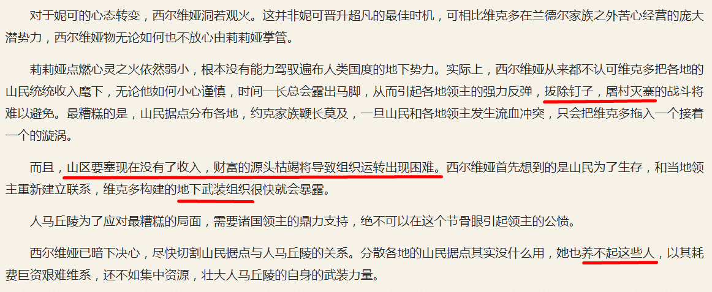
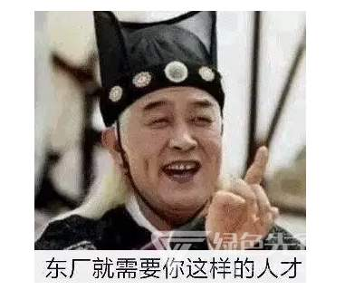
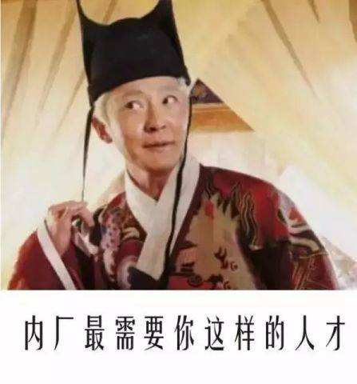

2020-07-28 01:00
洗完澡了精神抖擞容光焕发，上网乱转没发现什么重要情报。不过呢，虽然向阅文集团充值存在风险，无法继续深入揭批各种广告软文当中透露的国家机密兼宇宙奥秘，但是对于已经订阅的内容还是可以反复审核的嘛。
比方说昨天的情报：

是不是影射了现实局势？正好配合光荣版三国爱好者炒作「白帝城托孤」遥相呼应。肯定是哪家豪门贵种走兽派「外面的架子还没倒，内囊却渐渐紧了起来」，最近所有炒作「爷有得是钱，就当打发叫花子了」之类情报，就好比那胡雪岩债务缠身破产前夕还在到处炫富一般，否则垮得更快。
所以这两天看到密集炒作「武德充沛」题材文艺作品，就是针对这些「地下武装组织」的放风，结合前几篇题外话当中的推理，这个大罂蒂果贩毒集团延续了上百年，在红色基因当中的人脉最起码也有「陕甘宁边区」「晋绥边区」两拨卑污的粪壤里绽放的鲜花（疑似《好一朵美丽的玫瑰花》相关放风），总之都是鲜卑丐帮。
正是由于这次遭瘟，到处严防死守导致线上线下的毒品产业链基本上都已经中断，所以才会有那许多「侠之大者为国为民」到处哀嚎「连替天行道的机会都没有了」之类。按照大手情报机构的政治规矩和组织纪律，均为单线联系，所以「切割」起来尤为方便，只要关键节点「傻了吧，爷会飞」或者干脆「人间蒸发」，这些之前遍布国际一流和谐宜居之都大街小巷叫嚣乎东西隳突乎南北的民间武德，就会被一网打尽。
2020-07-28 10:00
睡一觉起来上网乱转没发现什么重要情报，或者说都是第六次中东战争和/或第三次鸦片战争兼第三次世界大战这个大背景之下的各种噪音。不过呢，国际一流和谐宜居之都「高学历精英社交圈」正在首页刷屏五种联合国工作语言和三种法西斯语言相关的学术讨论，尤其是各种深入解读「细微差别」指导入乡随俗，大部分乍一看并没有蕴涵充沛的政治和意识形态内容或引领了激烈的政治和意识形态斗争新动向。
这里强调，这些「学术讨论」虽然有私货，但是内容本身还是很有价值的。即便对吟游诗人眉飞色舞的宣扬「狡兔三窟」之类兵家理念嗤之以鼻，也得记住「艺不压身」，最起码见多识广开眼界总没有害处。哪怕人民群众并未意识到自己在「没什么自由意志，中央情报局已经钦定了」的大目标当中，即将进集中营批量无害化处理或者背井离乡当难民。
其它废话不提，就说个人经历，只要提到自己「只懂汉语」，立刻就被官方评价为「反汉贱种中国通」并且「没有身份证」，据称是中央三令五申的最高指示。只要境内十四亿尼堪费拉只有一条路可走，甭管哪条路，就一定将其逼上绝路，不给任何「此处不留爷自有留爷处」的机会，从而为色目太君「多多生养遍布大地」腾出生存空间。
所以才会在砥砺奋进七八年来的国际一流和谐宜居之都之大街小巷出现那许多色目混混鸡鸣狗盗之徒，逮谁喷谁「滚回哪儿哪儿去，北京不是你的家」。结合上面的爆料，这帮民间武德是幕后黑手扶持的钦定主角龙傲天构建的「地下武装组织」，外围炮灰不需要知道组织需要幽州两千两百万户口滚到哪里去，重点是「滚」或曰「圆润的离开」，随口扯个境外乃至大气层外的地名就可以了也。时不我待，杰克伦敦计划顺利执行中，人口爆炸的色目太君已经收拾好行李了准备占领「无主之地」了，这边总得加班加点把接待工作完成才对。
顺便解释一下「浓墨重彩渲染阴暗面，专门抹黑绝不洗白」的创作原则与「无一字无来历」的职业习惯和「没有怨恨与偏见」的叙事操守之间的对立统一斗争。
顺手码字举例：
时间：1978年12月18日
地点：北京市海淀区羊坊店路甲1号
“今儿个咱开会，啊，三中全会”，邓丕平脱稿发言，“为啥叫‘三中’呢？小苏，你知道不？”
华国锋摇头。
“中东有石油，中亚有毒品，咱中国也有，但不如那边充沛”，邓丕平说，“而咱中国，有得是人，那边没有，或者说现在还没那么充沛”。
“比较优势”，轮值文曲星胡乔木补充说明，“量中华之人力，结与国之欢心”。
“形势比人强啊”，习仲勋感慨，“当年在陕甘宁边区，弹尽粮绝还不是靠种大烟撑过来的么”。
“晋绥边区也一样”，乌兰夫补充，“活人还能被尿憋死咋地？”
“所以说，牺牲一代尼堪换取经济腾飞”，叶剑英立掌如刀向下一划，“麻烦在于被大救星忽悠了这么多年，这帮傻哔都以为自己已经站起来了”。
“所以要让它们再跪下去嘛”，陈云说，“太君托我给你们带个话儿，只要膝盖生根头顶绿得发黑贱到骨子里去了的奴才”。
“哪怕老婆被后清亲王玩了”，李先念补充，“也得赔笑脸”。
“说得好！”李铁映喝彩。
台下掌声如雷。
“您怎么来了？”邓丕平陪着笑脸。
“父王龙体欠安”，李铁映鼻孔朝天，“让我代理监国”。
“娘娘有什么指示？”邓丕平继续赔笑脸。
“母后说了”，李铁映朗诵懿旨，“宫里就需要你这样的人才”。


这就叫「抹黑」，相信人民群众都知道绝对不可能是这种对话。但是内容「无一字无来历」，对事实的运用符合官方钦定党史国史的共识，并且运用了砥砺奋进七八年来流行于繁荣的简体中文互联网之上的主旋律正能量与时俱进表达方式，人民群众喜闻乐见就更容易接受。
未完待续